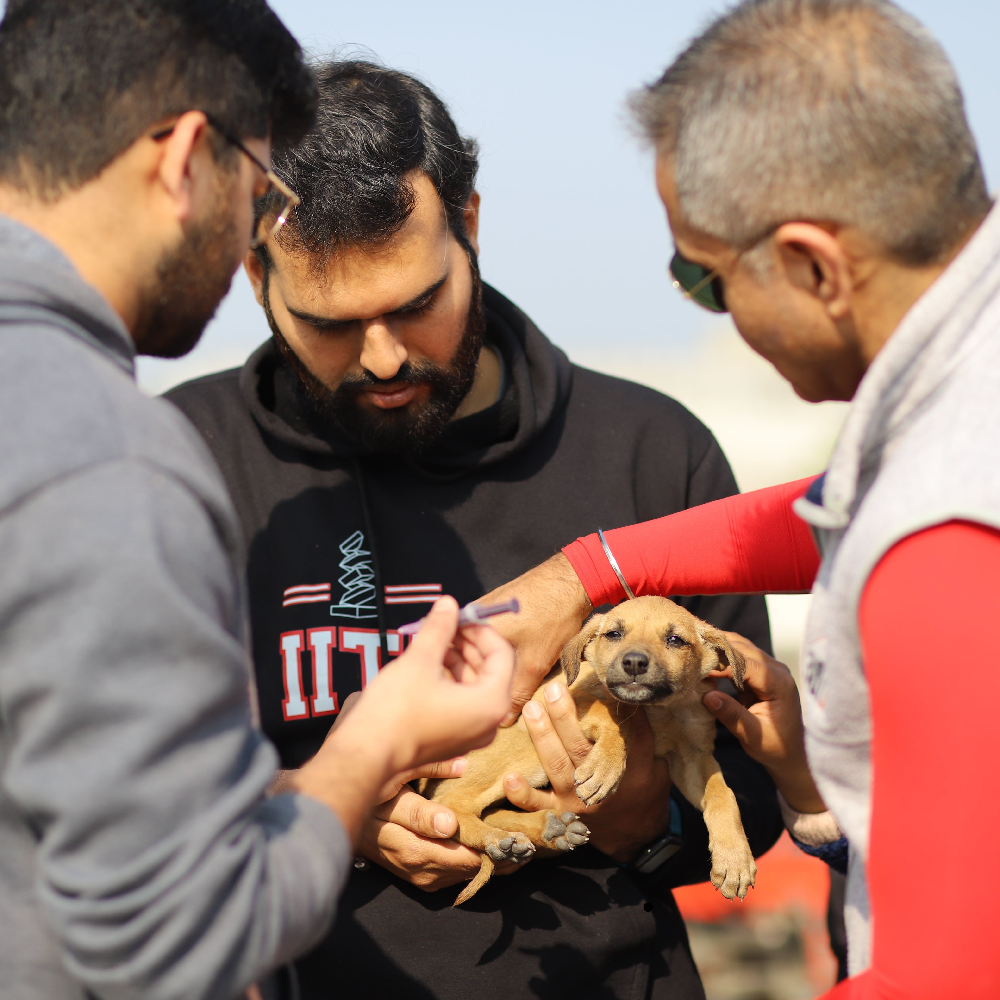
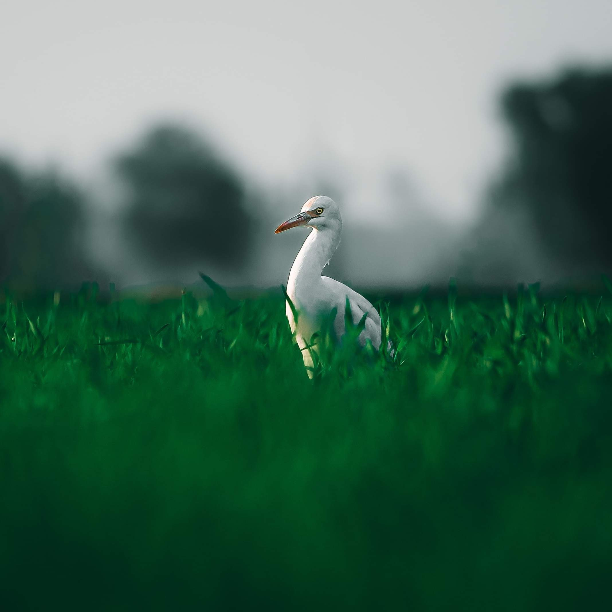
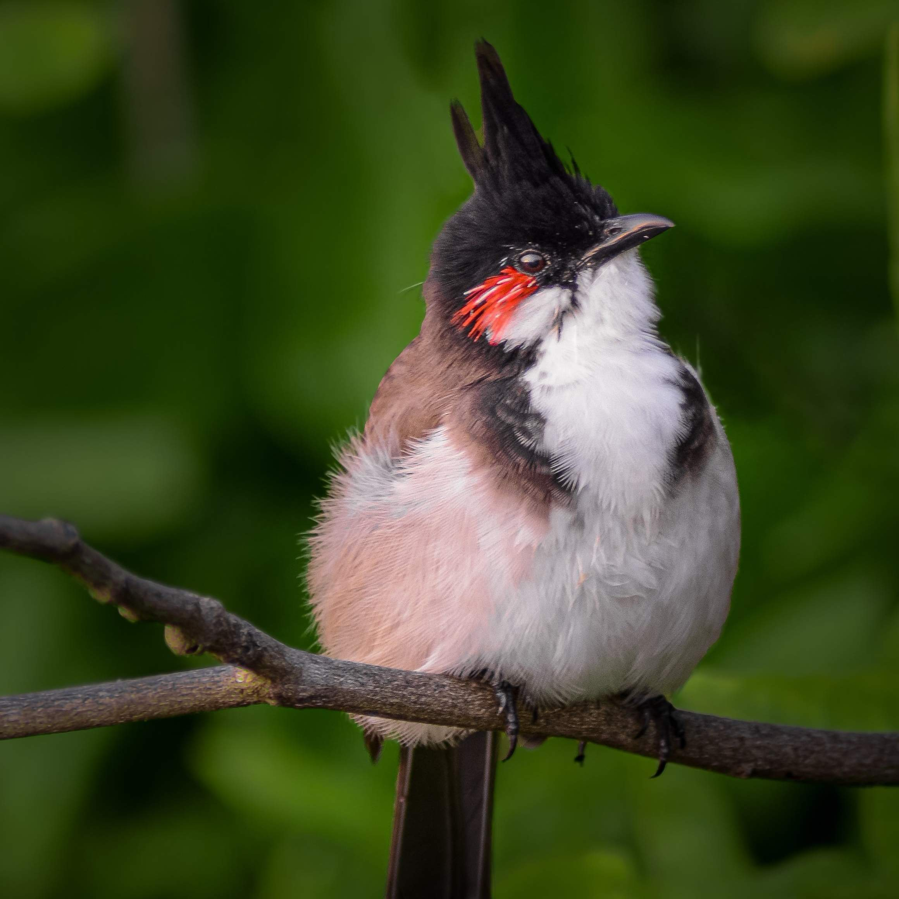
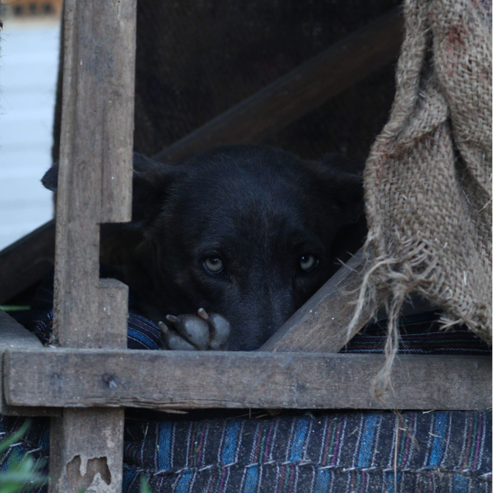
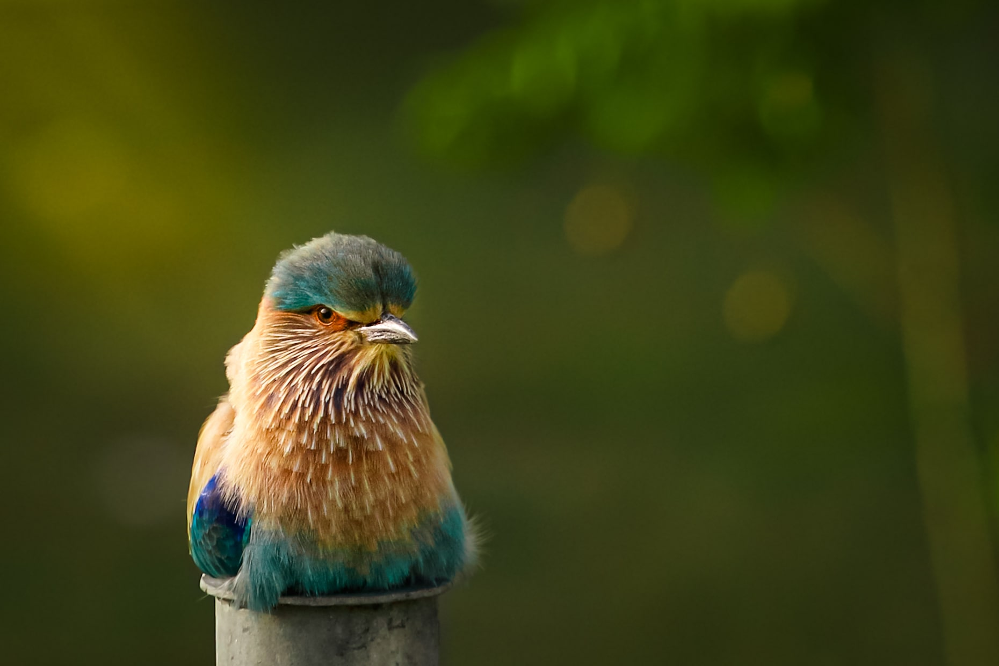
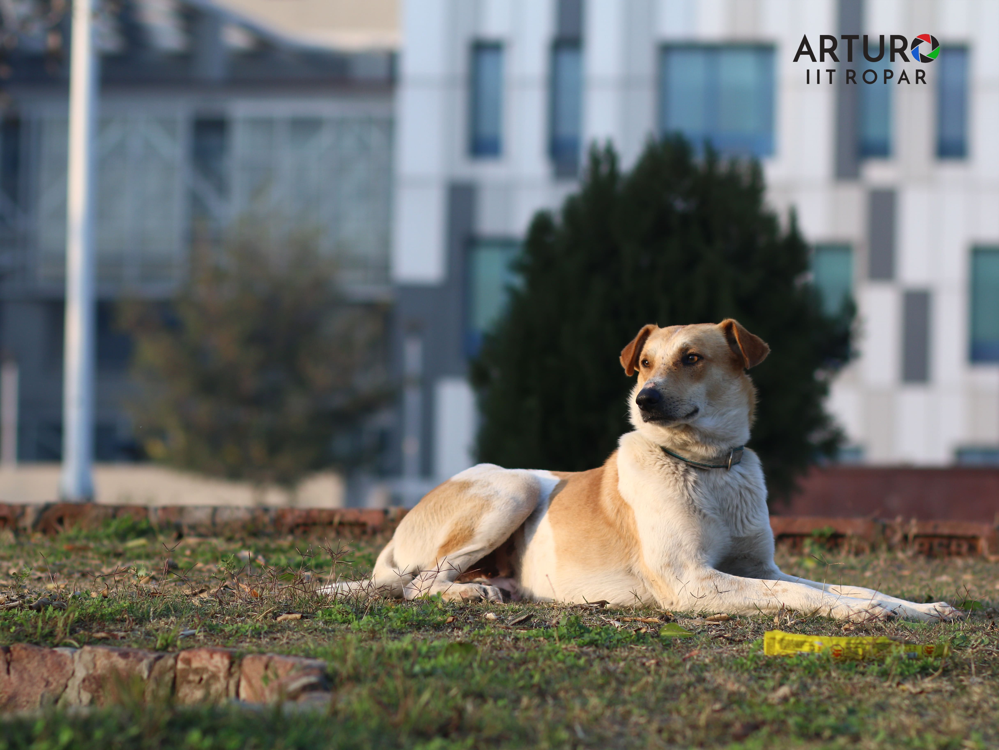
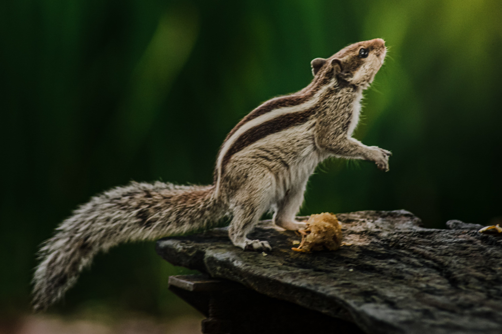
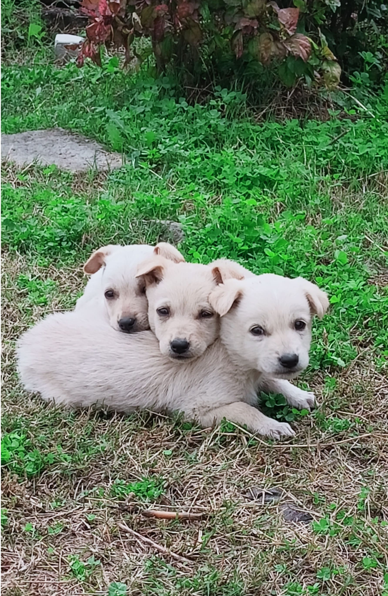

<div id="about" class="card-background bg-white">
  <div class="container text-center">
    <div class="row row-cols-2 text-start">
      <div class="col p-2" data-aos="fade-right" data-aos-delay="100">
        <h3 class="heading-one text-start">
          Animal Welfare Committee, IIT Ropar
        </h3>
        <h5 class="quote text-start">
          <small
            >"The animals of the planet are in desperate peril … It is time for
            all of us to stand up and demand action on their behalf." - Jane
            Goodall</small
          >
        </h5>
        <br />
        <p>
          Animal Welfare Committee (AWC) is a student-faculty-run organization
          that aims to promote the ethical treatment of animals and raise
          awareness about animal welfare issues.<br /><br />
          Some of the initiatives that are under proccess are listed below:
        </p>
        <ul class="initiatives">
          <li>
            <i class="ri-check-double-line ri-lg text-danger"></i>&nbsp; Regular
            feeding of animals at campus
          </li>
          <li>
            <i class="ri-check-double-line ri-lg text-danger"></i>
            &nbsp;Vaccination and Sterilization drive for the stray dogs in the
            Campus
          </li>
          <li>
            <i class="ri-check-double-line ri-lg text-danger"></i>&nbsp;
            Providing shelter and rescue of injured animals
          </li>
        </ul>
        <br />
        <p>
          AWC aims to build a supportive community of students interested in
          animal welfare, and aims to provide opportunities for members to
          network and connect with professionals in the field.<br /><br />
          The Animal Welfare Committee (AWC) is dedicated to creating a lasting
          impact on the welfare of animals on our campus. Though just starting,
          we are determined to make a difference through our efforts and
          initiatives, and strive to leave a legacy of compassion and care for
          animals."
        </p>
      </div>

      <div class="col" data-aos="fade-left" data-aos-delay="100">
        <div class="image-grid px-5 row row-cols-2 g-3">
          <div class="col">
            
          </div>
          <div class="col">
            
          </div>
          <div class="col">
            
          </div>
          <div class="col">
            
          </div>
        </div>
      </div>
      <div class="col py-5" data-aos="fade-right" data-aos-delay="100">
        <div id="imageCarousel" class="carousel slide" data-bs-ride="true">
          <div class="carousel-indicators">
            <button
              id="first-carousel-button"
              type="button"
              data-bs-target="#imageCarousel"
              data-bs-slide-to="0"
              class="active"
              aria-current="true"
              aria-label="Slide 1"
            ></button>
            <button
              type="button"
              data-bs-target="#imageCarousel"
              data-bs-slide-to="1"
              aria-label="Slide 2"
            ></button>
            <button
              type="button"
              data-bs-target="#imageCarousel"
              data-bs-slide-to="2"
              aria-label="Slide 3"
            ></button>
            <button
              type="button"
              data-bs-target="#imageCarousel"
              data-bs-slide-to="3"
              aria-label="Slide 4"
            ></button>
          </div>
          <div class="carousel-inner">
            <div class="carousel-item active" data-bs-interval="3000">
              
            </div>
            <div class="carousel-item" data-bs-interval="3000">
              
            </div>
            <div class="carousel-item" data-bs-interval="3000">
              
            </div>
            <div class="carousel-item" data-bs-interval="3000">
              
            </div>
          </div>
          <button
            class="carousel-control-prev"
            type="button"
            data-bs-target="#imageCarousel"
            data-bs-slide="prev"
          >
            <span class="carousel-control-prev-icon" aria-hidden="true"></span>
            <span class="visually-hidden">Previous</span>
          </button>
          <button
            class="carousel-control-next"
            type="button"
            data-bs-target="#imageCarousel"
            data-bs-slide="next"
          >
            <span class="carousel-control-next-icon" aria-hidden="true"></span>
            <span class="visually-hidden">Next</span>
          </button>
        </div>
      </div>
      <div class="col p-5" data-aos="fade-left" data-aos-delay="100">
        <div class="row">
          <div class="col-1">
            \
            <i
              class="bi bi-check2-circle text-danger"
              style="font-size: 40px"
            ></i>
          </div>
          <div class="col-11 about-2">
            <h3 class="heading-two">Mission</h3>
            <p>
              - Educating the general public on how to deal with the diverse
              wildlife found on campus.
            </p>
            <p>
              - Not just to care for the animals on campus, but also to create a
              safe environment for us humans to co-exist.
            </p>
            <p>
              - Take positive actions towards a healthier relationship between
              'us' and 'them'
            </p>
          </div>
        </div>
        <div class="row mt-4">
          <div class="col-1">
            <i
              class="bi bi-check2-circle text-danger"
              style="font-size: 40px"
            ></i>
          </div>
          <div class="col-11 about-2">
            <h3 class="heading-two">Vision</h3>
            <p>
              - Establishing a smooth co-existence where both humans and animals
              live peacefully preserving their rights and practicing their
              duties.
            </p>
          </div>
        </div>
      </div>
    </div>
  </div>
</div>
